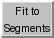

Fit to Segments 
Fit to Segments rigidly fits atomic structures into
segmentation regions
from Segment Map.
Along with that tool, it is part of the
Segger package described in:
Quantitative analysis of cryo-EM density map segmentation by watershed and
scale-space filtering, and fitting of structures by alignment to regions.
Pintilie GD, Zhang J, Goddard TD, Chiu W, Gossard DC.
J Struct Biol. 2010 Jun;170(3):427-38.
See also:
Segger documentation at NCMI,
Fit in Map,
Volume
Viewer,
MultiFit,
fitmap,
measure,
molmap,
mask
There are several ways to start
Fit to Segments, a tool in the Volume Data category
(including from the
Volume Viewer
Tools menu).
The Structure to fit should be chosen from the pulldown menu
of molecule models. Any atoms in the model that are not desired for fitting,
such as solvent or extra chains, should be
deleted
before the fitting is done.
Clicking Fit performs the fitting.
The default settings are to fit the structure
to the selected regions
using the principal axes method. The regions are made transparent;
region transparency/opacity can be adjusted further using the
Regions
menu in Segment Map or
the main Chimera menu
Actions... Surface.
Fit information is shown in a table:
One or more rows (fits) can be chosen with the mouse.
The structure is repositioned as each fit is chosen.
The chosen fit(s) can be saved to PDB files or removed from the table using
the Fit to Segments File menu.
Clicking Options reveals additional settings
(clicking the close button  on the right
hides them again):
on the right
hides them again):
- Density map resolution
[r] grid spacing [s]
- set parameters for generating a density map from the atomic structure,
to allow calculating correlation values for fits.
Each atom is described as a 3D Gaussian distribution of width proportional
to the resolution r and amplitude proportional to the atomic number
(as is done by the command
molmap).
The grid spacing s is the separation of points
along the X, Y, and Z axes of the generated map.
The resolution and spacing should be approximately the same as
for the map into which the structure is being fit (the map that was
segmented).
Clicking Fit or Calculate Map will generate the map from the
structure if it does not already exist.
- Which regions to use for fitting:
- Combined selected regions (default)
- use the selected
sementation regions collectively
- Each selected region
- use each selected
segmentation region for a separate fit
- Groups of regions including selected region
- generate groups of segmentation regions that include the
selected one, try
fitting to each group; save the best fits in the table
- Groups of regions including all regions
- combinatorially group subsets of all segmentation regions, try
fitting to each group; save the best fits in the table
- Alignment method:
Fit to Segments Menu
File
- Save chosen fit molecules
- save a PDB file of the structure in its fit position for
each chosen row in the table of fits
- Place molecule copies
- add a copy of the structure in its fit position (as a new model) for
each chosen row in the table of fits
- Delete fits from list
- remove the chosen row(s) from the table of fits
- Show molecule axes
- display the principal axes
of the atomic structure as arrows
- Hide molecule axes
- hide the principal axes of the atomic structure
- Show overlapping regions - display only the regions that
overlap the atomic structure in its current position
(all regions can be displayed again using the
Regions
menu in Segment Map)
UCSF Computer Graphics Laboratory / April 2011